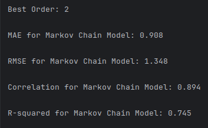

Use Meteostat python library and take one form of weather data. Predict future values based on the historical temporal sequence. The objective is to leverage the temporal dependencies within the data to create an effective predictive model.
The dataset is structured around daily weather measurements, specifically fetched for Vancouver, BC, Canada. Data retrieval is facilitated by the Meteostat library’s Daily class, which allows for the acquisition of historical daily weather data. A geographic point is defined for Vancouver (latitude 49.2497, longitude -123.1193, altitude 70 meters) using the Point class, pinpointing the exact location for which the data is collected. The data covers a complete calendar year from January 1, 2018, to December 31, 2018.
1 LSTM Model
This implementation adopts the xLSTM model as presented by Beck, M. et al. (2024), which introduces significant enhancements over traditional LSTM models. The xLSTM is designed to address specific limitations of conventional LSTMs by incorporating novel architectural features that improve both performance and scalability. The implementation by andrewgcodes. (2024) was augmented and expanded upon to fuel the creation of custom classes to address this specific project.
1.1 Data Preprocessing
1.1.1 Step-by-Step Description
- Normalization: Each feature in the dataset is scaled to a range between 0 and 1 based on its minimum and maximum values. This normalization ensures uniformity in feature scale, which is essential for neural network models like LSTM, which are sensitive to input scale variations (Listing 1).
Listing 1. Normalize data while extracting features for model training, validation, and testing.
main.py
# Define a function to extract features from the data
def extract_features(data, features):
# Get the specified features
data = data[features]
# Find the minimum and maximum values of the data
data_min = data.min()
data_max = data.max()
# Normalize the data
data = (data - data_min) / (data_max - data_min)
# Split data into train (60%), val (20%), and test (20%) sets
train, val, test = (data[:int(0.6 * len(data))].values,
data[int(0.6 * len(data)):int(0.8 * len(data))].values, data[int(0.8 * len(data)):].values)
# Convert to PyTorch tensors and reshape
# The shape of the data should be (batch_size, sequence_length, num_features)
train_tensor = torch.tensor(train).float().view(1, -1, len(features))
val_tensor = torch.tensor(val).float().view(1, -1, len(features))
test_tensor = torch.tensor(test).float().view(1, -1, len(features))
# Return the tensors and the min/max values
return train_tensor, val_tensor, test_tensor, data_min, data_max- Handling Missing Data: Missing data points are interpolated linearly, maintaining the continuity and integrity of the time series, which is essential for accurate forecasting (Listing 2).
Listing 2. Interpolate missing data.
main.py
# Set time period
start = datetime(2018, 1, 1)
end = datetime(2018, 12, 31)
# Create Point for Vancouver, BC
vancouver = Point(49.2497, -123.1193, 70)
# Get daily data for 2018
data = Daily(vancouver, start, end)
data = data.fetch()
data = data.interpolate(method='linear')- Creating Sequences: The data is then segmented into sequences suitable for training the LSTM model. Through trial-and-error experimentation, it was discovered that a sequence length of 80 is ideal for this data set. Each sequence has consecutive data points that the LSTM will use to learn the weather data’s underlying patterns.
1.1.2 Justifications
Normalization and interpolation are crucial for preparing real-world data for machine learning applications, ensuring the model trains on clean and representative data. Creating structured sequences from this data enables the LSTM to effectively capture temporal dependencies, a core aspect of its predictive capability.
1.2 LSTM Model Architecture
1.2.1 Step-by-Step Description
xLSTM Architecture: The xLSTM consists of two modified LSTM layers that are contained inside xLSTM blocks:
mLSTM (Matrix LSTM) Layer: Incorporates a matrix memory state and covariance update rule, which allows for full parallelization and efficient memory utilization. This layer is designed to enhance the LSTM’s ability to store and retrieve information dynamically, making it highly effective for tasks requiring complex memory management (Beck, M. et al., 2024 pp. 4-5).
sLSTM (Scalar LSTM) Layer: Features a scalar memory update and new memory mixing techniques that improve the model’s ability to handle long-range dependencies. Exponential gating is used in this layer to stabilize the training process and prevent gradient explosions (Beck, M. et al., 2024 pp. 3-4).
xLSTM Blocks: Each xLSTM block (Listing 3), which may contain either or both types of layers, passes information through residual connections, allowing the model to learn deep representations without loss of performance due to vanishing or exploding gradients (Beck, M. et al., 2024 pp. 5-6).
Listing 3. xLSTM block class.
xLSTM.py
# Define the xLSTM block
class xLSTM_Block(nn.Module):
def __init__(self, block_type, input_size, hidden_size, layers=2, mem_size=None):
super(xLSTM_Block, self).__init__()
# initialize the dropout layer
self.dropout = DynamicDropout()
# Create multiple mLSTM and sLSTM layers depending on the block type
if block_type == 'mLSTM':
# Create multiple mLSTM layers
self.layers = nn.ModuleList([mLSTM(input_size if i == 0 else hidden_size, hidden_size, mem_size)
for i in range(layers)])
elif block_type == 'sLSTM':
# Create multiple sLSTM layers
self.layers = nn.ModuleList([sLSTM(hidden_size, hidden_size) for _ in range(layers)])
# forward pass
def forward(self, x, initial_states):
# Initial hidden states
hidden_states = self.layers[0].init_hidden()
# Loop through the layers
for i in range(len(self.layers)):
# Forward pass through each layer
x, hidden_states = self.layers[i](x, hidden_states)
# Apply dropout
x = self.dropout(x)
# Return the hidden state and the new states
return x, hidden_statesView xLSTM.py
- Configuration: The complexity of the dataset and the depth of features required a configuration of 30 hidden units, 30 matrix memory dimension size for mLSTM layers, and one layer of either mLSTM or sLSTM depending on the corresponding xLSTM block. Through trial and error, this configuration was found to provide the most consistency in terms of accuracy (Listing 4).
Listing 4. xLSTM configuration.
main.py
# xLSTM model parameters
hidden_size = 30
mem_dim = 30
layers = 1
seq_len = 80- Dynamic Dropout Layers: Custom Dynamic dropout layers are integrated within the xLSTM blocks to prevent overfitting by randomly omitting subsets of features and hidden states during the training process. This custom layer class adjusts the rate in either direction by a factor of 0.02 for a minimum of 0 and a maximum of 0.1. These adjustments during training are meant to help the model to avoid local minima and ensure stable convergence to the optimal solution. These features are critical for maintaining the model’s performance stability across different datasets and training conditions.
View dynamic_dropout.py
1.2.2 Justifications
The architecture is carefully designed to enhance the LSTM’s ability to process and remember information over long sequences, crucial for time-series forecasting. Dropout layers add an essential regularization element, increasing the model’s generalization capabilities.
1.3 Temporal Sequence Input Mechanism
The train_model() method in xLSTM_model class feeds the training data to the model of the specified sequence length (Listing 5). As previously mentioned, a sequence length of 80 tends to produce the most consistently accurate results. Experimenting with various sequence lengths helps identify the most effective input configuration for maximizing the predictive performance of the model, ensuring that it is tuned to the specific temporal dynamics of the dataset.
Listing 5. Train Model method.
xLSTM.py
# Train the model
def train_model(self, data, val_data, epochs, seq_len):
# initialize the early_stopping object
early_stopping = EarlyStopping(patience=50, verbose=True)
# loop through the epochs
for epoch in range(epochs):
# zero the gradients
self.optimizer.zero_grad()
# initialize the loss
loss = 0
# loop through the sequence length
for t in range(seq_len - 1):
# get the input at time t
x = data[:, t]
# get the target at time t+1
y_true = data[:, t + 1, 0]
# get the prediction
y_pred = self(x)
# calculate the loss from the training data
loss += self.criterion(y_pred, y_true)
# validate the model on the validation data
val_loss = self.validate(val_data)
# print the validation loss
print(f'Epoch {epoch} Validation Loss {val_loss.item()}')
# call the early stopping object
early_stopping(val_loss, self)
# if early stopping is triggered
if early_stopping.early_stop:
# print message
print("Early stopping")
# stop the training
break
# calculate the average loss
loss.backward()
# clip the gradients to prevent exploding gradients
torch.nn.utils.clip_grad_norm_(self.optimizing_parameters, max_norm=1)
# update the weights
self.optimizer.step()
# print the training loss every 10 epochs
if epoch % 10 == 0:
print(f'Epoch {epoch} Loss {loss.item()}')
# load the best model before early stopping
self.load_state_dict(torch.load('checkpoint.pt'))1.4 Training Process
1.4.1 Step-by-Step Description
Training Execution: The model is trained on the preprocessed dataset, using a combination of the Adam optimizer and custom training enhancements like dynamic dropout and early stopping.
Optimizer: The xLSTM uses an Adam optimizer with weight decay and gradient clipping to optimize training. This setup helps in mitigating the common issues of underfitting and overfitting by regulating the update magnitudes (See
init()method in xLSTM_model class).Early Stopping: Utilizes a custom class to halt training when improvements cease as observed by the loss produced by the validation data set. Each time there is an improvement in loss, evaluating on a validation data set during training, the model’s current state in training is saved. Whenever ever losses don’t improve from the recorded minimum the early stopping object’s patience counter is incremented and it triggers the dynamic dropout layer’s rate to increase. Every time the loss improves the patience counter is reset back to 0 and the dynamic dropout layer is triggered to decrease its rate.
View early_stopping.py
- Monitoring Metrics: During training, Smooth L1 Loss is monitored to assess the model’s performance and make necessary adjustments. Smooth L1 Loss, also known as the Huber loss, is a combination of L1 and L2 loss functions. It behaves like L1 loss when the absolute error is large and like L2 loss when the error is small (See
init()method in xLSTM_model class).
1.4.2 Justifications
Adam Optimizer with Weight Decay and Gradient Clipping: The Adam optimizer is chosen for its adaptability, as it customizes learning rates for each parameter, enhancing convergence efficiency across diverse data scales. Incorporating weight decay directly combats overfitting by penalizing larger weights, promoting a simpler, more generalizable model. Gradient clipping is essential to maintain numerical stability, preventing the exploding gradients phenomenon that can disrupt the training of deep networks, especially in architectures like LSTMs that are susceptible to large gradient values.
Early Stopping: Early stopping acts as a practical regularization technique, halting training when validation performance ceases to improve, thereby avoiding overfitting. This method not only ensures the model does not overlearn from the training data but also conserves computational resources. By saving the model with the best overall validation losses we can preserve the model at the exact point in the training that it was performing the best. We then load the model’s best saved state after training has finished.
Smooth L1 Loss: This loss function transitions between L1 loss, which is robust against outliers, and L2 loss, which is sensitive to small error variations, depending on the magnitude of the error. This dual nature makes Smooth L1 Loss ideal for regression tasks in LSTM models, where maintaining the precision of predictions and handling outliers effectively are both crucial for achieving accurate and reliable forecasts.
1.5 Evaluation
1.5.1 Step-by-Step Description
Testing: The model’s performance is evaluated on a separate test set to ensure it generalizes well beyond the training data.
Metrics: Performance metrics such as MAE, RMSE, correlation, and R2 are calculated, providing a comprehensive view of the model’s accuracy and reliability. Predictions are also plotted against the actual test values to allow the user to compare results visually
1.5.2 Justifications
Univariate and multivariate versions of the model are created for performance comparison. The model’s effectiveness is evaluated using a comprehensive set of metrics such as Mean Average Error (MAE), Root Mean Squared Error (RMSE), correlation, and coefficient of determination (R2), offering a nuanced view of its predictive capabilities. Each metric of evaluation was carefully selected to capture a certain aspect of the model’s performance. MAE reveals how well adapted the model is to outliers, RMSE provides a more general view of the model’s performance, correlation tells how well the model responds to trends in the data, and R2 shows how well the model has the learned the variance between the independent variables and the dependent variables indicating how well the model will predict previously unseen samples. These are examined in comparison to the Markov Chain model to reveal that both univariate and multivariate models can be trained to a staggering precision of accuracy (Figure 1).
2 Markov Chain Model
2.1 Order Selection
2.1.1 Step-by-Step Description
Model Training and Prediction: For each order from a range of 2 to 30, instantiate and train a Markov Chain model. Extend the test data by appending the last ‘order’ elements of the training data to provide necessary context, then use this model to predict outcomes over the adjusted test set.
Performance Evaluation: Calculate key performance metrics for each order, including Root Mean Squared Error (RMSE), Mean Absolute Error (MAE), Pearson Correlation, and R-squared (R2).
Optimal Order Determination: Compile the performance metrics into a DataFrame, rank each order based on these metrics, and compute an average ranking for each. The order with the lowest average rank, indicating the best overall performance, is selected as the optimal order for the Markov Chain model.
2.1.2 Justifications
This methodical approach ensures a comprehensive evaluation of how well the Markov Chain model performs across a spectrum of complexity (different orders). By considering multiple metrics and their average ranks, the selection process is robust against the peculiarities of any single metric. This thorough testing and selection strategy ensures that the chosen order is well-suited for the dataset and prediction task, balancing model simplicity and predictive accuracy effectively (Listing 6).
Listing 6. Find Best Order method.
markov.py
# Define a function to find the best order for the Markov Chain model
def find_best_order(train_data, test_data, min_order, max_order):
# Initialize a list to store the results
results = []
# Loop through the range of orders
for order in range(min_order, max_order + 1):
# Create and train the Markov Chain model
model = MarkovChain(order)
model.fit(train_data)
# Add the last 'order' elements of the training data to the test data
# to ensure that the test data is long enough for the predictions
# for the test data in the LSTM models
test_data = np.concatenate((train_data[-order:], test_data))
# Make predictions on the test set, feeding the model order elements at a time
markov_pred = [model.predict(test_data[i - order:i]) for i in range(order, len(test_data))]
# Calculate the metrics
mse = mean_squared_error(test_data[order:], markov_pred)
mae = mean_absolute_error(test_data[order:], markov_pred)
corr, _ = pearsonr(test_data[order:], markov_pred)
r2 = r2_score(test_data[order:], markov_pred)
# Store the results
results.append((order, sqrt(mse), mae, corr, r2))
# Convert the results to a DataFrame
results_df = pd.DataFrame(results, columns=['order', 'rmse', 'mae', 'corr', 'r2'])
# Rank the results
results_df['rmse_rank'] = results_df['rmse'].rank()
results_df['mae_rank'] = results_df['mae'].rank()
results_df['corr_rank'] = results_df['corr'].rank(ascending=False)
results_df['r2_rank'] = results_df['r2'].rank(ascending=False)
# Calculate the average rank
results_df['avg_rank'] = results_df[['rmse_rank', 'mae_rank', 'corr_rank', 'r2_rank']].mean(axis=1)
# Return the order with the lowest average rank
best_order = results_df.loc[results_df['avg_rank'].idxmin(), 'order']
# Return the best order for the Markov Chain model
return best_orderView markov.py
2.2 Transition Probabilities
2.2.1 Step-by-Step Description
- Calculation of Transition Probabilities: The probabilities of transitioning from one state to another were calculated based on historical data, forming a transition matrix essential for the Markov Chain operations (Listing 7).
Listing 7. Calculate transition matrix.
markov.py
# Fit the Markov chain to the data
def fit(self, data):
# Get the unique states in the data, and convert them to strings
self.states = np.unique(data).astype(str)
# Initialize the transition matrix, and set all values to zero
# with the states as the row and column indices
self.transition_matrix = pd.DataFrame(np.zeros((len(self.states), len(self.states))), index=self.states, columns=self.states)
# Iterate through the data, and update the transition matrix
for i in range(len(data) - self.order):
# Get the current and next states
current_state = data[i].astype(str)
# Next state is order steps ahead
next_state = data[i + self.order].astype(str)
# Update the transition matrix at the current and next states
self.transition_matrix.loc[current_state, next_state] += 1
# Normalize the transition matrix to values between 0 and 1
# Sum up the rows of the transition matrix
# Add a small value to the denominator to avoid division by zero
row_sums = self.transition_matrix.sum(axis=1) + 1e-10
# Divide each row by the row sum to get the transition probabilities
self.transition_matrix = self.transition_matrix.div(row_sums, axis=0)- State Space Simplification: Given the continuous nature of temperature values, the state space was large. Rounding these values to integers significantly reduced the state space, allowing for more manageable and accurate transition probability calculations.
2.2.2 Justifications
The simplification of the state space by rounding continuous values to integers does blunt of model precision in predicting exact float values. However, this is an acceptable loss when taking into context that the overall model accuracy is greatly improved. By narrowing the state space, the model can calculate transition probabilities that lead to much closer predictions to the real-world data (Figure 2).


2.3 Temporal Sequence Input
The sequence length for input into the Markov Chain model was adjusted during the experimental phase to identify the optimal configuration for capturing relevant temporal dependencies, aligning with the chosen order of 2. Optimizing sequence length ensures that the model has sufficient historical context to make accurate predictions while avoiding the overhead of unnecessary data processing.
2.4 Prediction Mechanism
The Markov Chain model uses the transition matrix to predict future values based on a given sequence of historical data. This method utilizes the established probabilities to forecast the next most likely state (Listing 8). This approach leverages the probabilistic nature of Markov models to provide a straightforward and effective means of time-series forecasting, particularly suitable for datasets with clear transitional patterns.
Listing 8. Predict method.
markov.py
# Predict the next state in the sequence
def predict(self, sequence):
# Get the current state
state = sequence[0].astype(str)
# If the state is not in the transition matrix
if state not in self.transition_matrix.index:
# Return the first state in the sequence as the prediction (fallback)
return sequence[0]
# Return the state with the highest probability in the transition matrix
return self.states[np.argmax(self.transition_matrix.loc[state])].astype(sequence.dtype)2.5 Evaluation
2.5.1 Step-by-Step Description
Performance Comparison: The performance of the Markov Chain model was evaluated against the LSTM models using the same test set. Metrics like Mean Absolute Error (MAE), Root Mean Squared Error (RMSE), and R2 were used for a comprehensive assessment.
Results Analysis: While the xLSTM models generally performed better due to their ability to model complex dependencies, the Markov Chain model offered competitive accuracy with much lower computational requirements (Figure 1).
2.5.2 Justifications
The best performing Markov model (trained on int float values) is compared with some of the best trained xLSTM models (univariate and multivariate) to reveal that on average the xLSTM models proved more accurate than the Markov chain model for this particular dataset. This isn’t entirely surprising given that the xLSTM model’s complexity allow it to capture the intricate relationships in the time series data better. However, the Markov chain model is much more light weight in time and space complexity. Also, the implementation of Markov chain is much simpler and straightforward requiring little experimentation to achieve reasonably accurate performance. While the xLSTM models required a large amount of trial-and-error experimentation with hyper parameters to find optimal and stable results. Overall if the accuracy of Markov chain is within acceptable ranges of error than the clear choice in model implementation would be Markov. Markov is a more cost-effective solution in terms of time, resources, and deployment. But if the solution is less tolerant of error, then xLSTM is a preferable implementation for accuracy in time series data. (Figure 1).
References
andrewgcodes. (2024) ‘xLSTM: my attempts at implementing various bits of Sepp Hochreiter’s new xLSTM architecture’, GitHub repository. Available at: https://github.com/andrewgcodes/xlstm (Accessed: 9 May 2024).
Beck, M., Pöppel, K., Spanring, M., Auer, A., Prudnikova, O., Kopp, M., Klambauer, G., Brandstetter, J. and Hochreiter, S. (2024) ‘xLSTM: Extended Long Short-Term Memory’, arXiv preprint arXiv:2405.04517. Available at: https://doi.org/10.48550/arXiv.2405.04517 (Accessed: 9 May 2024).